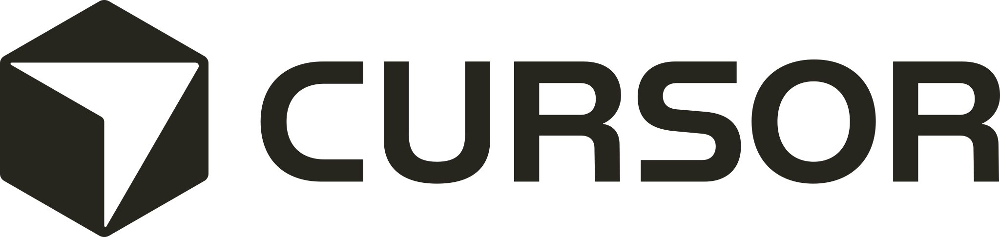
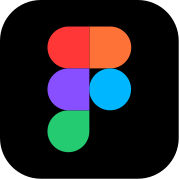

The Workflow
Bring the idea to life.
- Build. Created a fully functional Lab 2 environment that I can quickly iterate on, add to, and explore in.
- Use. As I build, I can actually use the product in realtime to test both on myself and with users.
- Refine. As I learn, test, and collect feedback I can keep refining the product until it's ready to handoff.
Built with


Build

Use
Refine